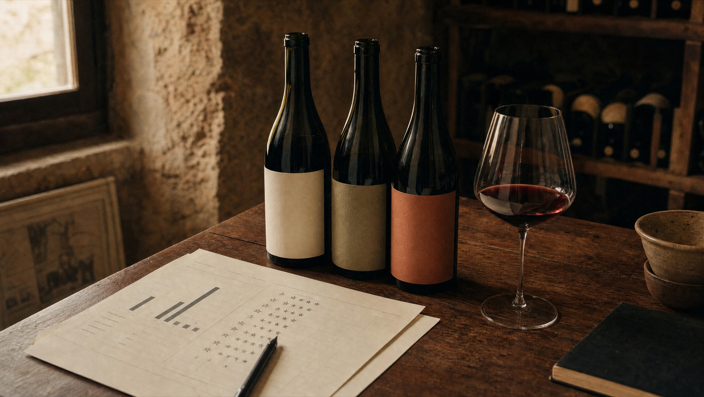
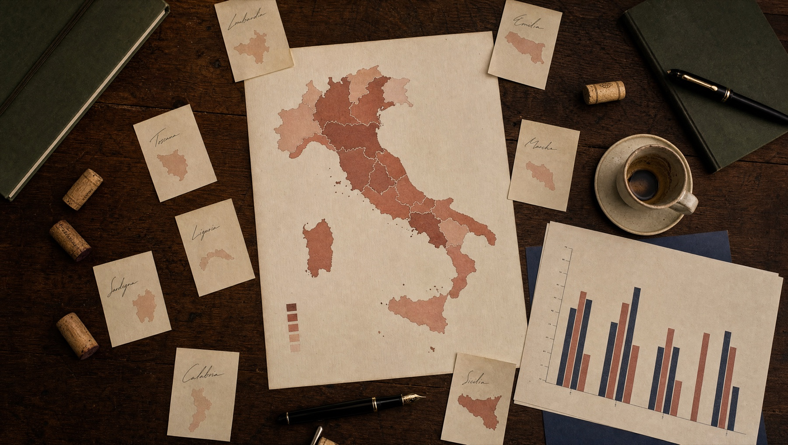
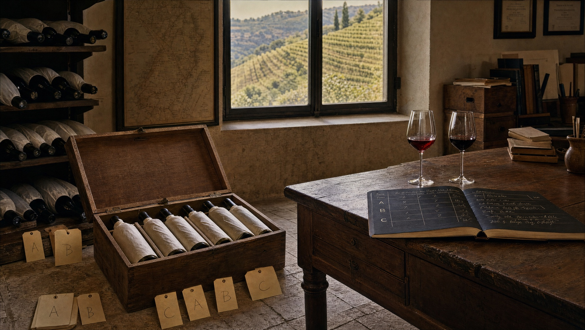

An evaluation of the Slurpini partner-intelligence case from the perspective of reproducible data products, governance, and the cost of doing more than the brief asked.

I answered the brief twice. /bare is the assignment in ~150 lines: one pandas notebook, a first-word producer heuristic, a half-page recommendation. /supercharged treats the same question as a data product: Polars and DuckDB, Pandera contracts, a five-factor Bayesian composite, LLM disambiguation, property-based tests, config-hashed run logs, a Vite dashboard, and external-validity work against Italian Trade Agency NL imports. The professional question is which one earns its place, and why.
Vivino is presented as a global consumer wine signal. In practice, it is a collection of ratings with demographic and regional bias, a long tail of low-confidence rows, and a producer field that does not exist as such. Producer identity has to be inferred from wine names.
That distinction matters. The better question is not whether Vivino can produce a ranking — it can — but whether the ranking resembles the Dutch wine market in the way Slurpini cares about, and whether the analysis surfaces that gap or papers over it.
For wines with thousands of reviews — Tenuta Masseto, Ornellaia, Antinori's Tignanello vintages — the Bayesian-shrunk weighted rating is a stable proxy for Dutch consumer preference. The math is uncontroversial. Where it gets interesting is producer extraction: producer names are a string-extraction problem, not a field. A pass-1 alias whitelist resolves the top fifty producers; a pass-2 LLM disambiguation pass on OpenRouter handles the remainder, cached so the same dataset never costs twice. A gold-set evaluation against known_producers_top50.csv measures the result: 88% recall on exact match, 96% on contains.

The supercharged track compares the regional distribution of the cleaned Italian Vivino dataset against ICE Amsterdam import data for the Netherlands. The result is uncomfortable. Toscana is over-represented by a factor of 1.22. Puglia is under-represented by 0.61. Abruzzo sits at 0.52, Campania at 0.55. These are not errors. They are the shape of Vivino's user base bleeding through into the dataset Slurpini would use to decide travel priorities.
The Vivino signal is most reliable in regions Slurpini already knows well, which is the opposite of where it most needs help. Any recommendation involving Puglia or Abruzzo should be marked under-sampled, not low-priority. The bare track buries this in four bullets. The supercharged track generates a bias-report on every run.
Stability checks complement the bias picture. A bootstrap of a thousand resamples puts Tenuta Masseto in the top-ten in 195 out of 200 runs; Dal Forno Romano in 185; Biondi-Santi in 160. Terre di San Vincenzo and Valdicava show extreme p95 ranks (412 and 228), meaning they made the top-ten by accident with too few reviews. The bare track lists them at face value.
Slurpini is a Dutch importer of high-quality Italian wines with an explicit sustainability focus. The company receives more collaboration requests from Italian producers than it can investigate. Each on-site visit costs travel, time and managerial attention. The brief is to add a structured, data-driven layer to that prioritisation problem.
This is a realistic business problem, not a textbook exercise. The challenge is not whether the data can produce a ranking — it can — but whether the ranking will hold up to the constraints of the actual decision: limited budget, sensitive about brand fit, sceptical of black-box scoring, and unforgiving when an importer flies to a region only to discover the data was misleading.
The technical pipeline is known. Clean and validate the Vivino export (mojibake, tuple-encoded country fields, cross-sheet dedupe). Extract producer identity from wine names — heuristic in the bare track, alias + LLM in the supercharged track. Aggregate per producer with Bayesian shrinkage on review counts. Apply a multi-factor composite score that captures more than just rating. Classify into actionable segments (Hidden Gem, Premium Icon, Commercial Value, Overpriced Risk, Low Confidence Niche) and recommendations (Target, Premium Brand Builder, Value Opportunity, Monitor, Avoid for Now). Quantify bias, declare confidence intervals, surface limitations.
None of these steps require new research. Combining them into a reproducible, defensible pipeline that the buying committee can interrogate is the actual engineering.

The bare track is the brief, literally. One Jupyter notebook reads the Vivino export, fixes the obvious data issues, applies a first-word producer heuristic, computes a Bayesian-shrunk weighted rating, ranks the top regions and producer fragments, exports three CSVs and writes a half-page recommendation. The notebook outputs are baked in. The reviewer can read the recommendation in five minutes without running anything. The limitations are surfaced in the same document. "Tenuta San Guido" becomes "Tenuta". Producer extraction is wrong on purpose. The recommendation still arrives at directionally correct findings because the high-volume signal is robust enough that even a crude pipeline can extract it.
The supercharged track answers the same business question as a data product. Polars and DuckDB instead of pandas. Pandera schema contracts at every stage boundary. Hydra-validated Pydantic configs with config-hash snapshots. A two-pass producer disambiguator with persistent LLM cache. Property-based tests on the scoring math via Hypothesis. Jinja-templated reports whose numbers come from a run log, not from the author. A Vite + React + Recharts dashboard. Fourteen CLI subcommands for operations, comparison, sensitivity sweeps, bootstrap CIs, clustering, bias quantification, anomaly detection, and Firecrawl-driven sustainability lookup.
| Area | /bare route | /supercharged route |
|---|---|---|
| Lines of code | ~150, single notebook | ~3,500, layered package |
| Producer extraction | First-word heuristic, ~30% wrong | Alias + LLM disambiguation, 96% recall |
| Confidence intervals | None | Bootstrap CIs on top-20 ranking |
| External validity | Four-bullet caveat | Quantified bias vs ICE NL baseline |
| Reproducibility | "Run all cells" | Config-hash stamped; cantinaiq audit <hash> |
| Reporting | One markdown file | Eight Jinja-templated artefacts + dashboard |
| Time to first read | 5 minutes | 30 minutes |
| Defensibility under questioning | Limited | Every number traces to a run log |
The bare track is the assignment compliance document. The supercharged track is the professional document. The first-word producer heuristic is deliberately wrong; the supercharged track exists to show why. The delta between the two tracks is the argument. Removing either one removes it.
If the analysis will be run again — quarterly, annually, on updated data — the cost of reproducibility amortises. Config-hash snapshots mean the seventh run agrees with the first or documents the delta.
If a buying committee will travel to Italy on the basis of the ranking, the ranking should declare its own confidence. Bootstrap CIs and bias quantification are the difference between defensible and a guess.
Notebooks do not survive sceptical questioning. A reproducible pipeline does. Every number traces to a parquet, every parquet to a config hash, every hash to a snapshot in version control.
If the data has a known skew — Vivino's Anglo-young demographic — the analysis should measure that skew, not assume it cancels out. The bias report is load-bearing for external validity.
A one-line pandas query. Building a Polars + DuckDB pipeline for it is theatre, not engineering.
If the result will be screenshot, pasted into a slide and never revisited, reproducibility infrastructure is wasted effort.
If the recommendation is already made and the analysis is rationalisation, the honest move is to stop producing the analysis.
The supercharged track was built because the same business question looks materially different when treated as a problem that will be solved more than once. The bias question becomes load-bearing. Bootstrap CIs become the difference between confidence and false confidence. The brief-as-stated wants the bare track. The brief-as-it-would-be-asked-in-industry wants the supercharged track. The professional skill is recognising which question is being asked.
For Slurpini, it does. The bare track lists "Tenuta" and "Marchesi" as top producer fragments. Uninterpretable. The supercharged track lists "Tenuta San Guido" and "Marchesi Antinori". Directly actionable. The bare track recommends "Expand in Puglia" without flagging Vivino's ×0.61 under-representation. The supercharged track flags that factor next to the recommendation. Those are not stylistic improvements. They are decisions changing.
Section 04 argued that the heavier engineering changes the decision. This section states the decision. It is the answer to ADA's third deliverable — written so a buying committee can act on it without re-opening the code. Numbers derive from the supercharged run at config hash b7f16c72; the bare track agrees directionally.
Tenuta Masseto sits at the top of the prestige tier (weighted rating 4.30 on 4,641 reviews at €1,567 average). Bootstrap stability puts it in the top-ten in 195 of 200 resamples. The recommendation is to maintain. Tenuta San Guido and Marchesi Antinori share the same band with similar stability.
Above-median weighted rating at well-below-median price. Pipeline-recommended regions: Roma, Torgiano, Ischia. Puglia (Primitivo di Manduria) and Abruzzo carry the strongest bare-track signal, but both sit at ×0.61 and ×0.52 in the bias report and need an under-sampled tag in any travel decision.
Producers with weighted rating ≥ 4.3 that sit just outside the ranking on review-count grounds. Terre di San Vincenzo and Valdicava show p95 bootstrap ranks of 412 and 228 — top-ten by accident with too few reviews. Worth a tasting before either dismissing or recommending. The bare track would not surface that distinction.
The Slurpini Partner Intelligence Score is a five-factor weighted composite (see §06). Each producer is classified into a market segment and assigned an action. The top of the ranking:
| Producer (region) | Segment / action | Signal |
|---|---|---|
| Roscato (Provincia di Pavia) | Commercial Value / Value Opportunity | WR 4.19 · 16,514 reviews · €22 · composite 0.38 |
| Tenuta Masseto (Toscane) | Premium Icon / Premium Brand Builder | WR 4.30 · 4,641 reviews · €1,567 · top-10 in 195/200 |
| Villa Degli (Veneto) | Hidden Gem / Target | WR 4.27 · 13,009 reviews · €20 |
| Risata (Moscato d'Asti) | Commercial Value / Value Opportunity | WR 4.17 · 6,224 reviews · €16 · composite 0.35 |
| Ca' del Doge (Veneto) | Commercial Value / Value Opportunity | WR 4.05 · 1,064 reviews · €6 · composite 0.34 |
Macro-region labels are canonical against data/reference/macro_regions.csv. Price columns are unweighted averages.
| Region | Weighted rating | Wines / avg price |
|---|---|---|
| Bolgheri Sassicaia | 4.50 | 22 wines · €672 avg |
| Bolgheri Superiore | 4.34 | 39 wines · €280 avg |
| Colli della Toscana Centrale | 4.30 | 5 wines · €281 avg |
| Passito di Pantelleria | 4.29 | 7 wines · €146 avg |
| Abruzzo | 4.29 | 7 wines · €46 avg |
Abruzzo at €46 average is the load-bearing detail — high quality at a price point that fits the value-opportunity recommendation, in a region the bias report flags as ×0.52 under-represented. The bare track surfaces the same directional findings without the segment classification, bootstrap stability or bias correction.
The recommendation in §05 rests on a composite score whose components are visible, weighted, and reproducible. The score is not the value of the document. The transparency of the score is.
A wine with a 4.8 rating on 12 reviews must not outrank a wine with a 4.4 rating on 5,000 reviews. Both tracks apply the same shrinkage:
For the logged run m = 948 (strategy auto-median) and μ = 4.0. The supercharged track lets m vary and measures how the top-twenty responds — see §07.
The Slurpini Partner Intelligence Score is a weighted average of five normalised components. Weights are business assumptions, versioned per config snapshot:
| Component | What it captures | Weight |
|---|---|---|
| Weighted Rating Score | Bayesian-shrunk consumer preference | 35% |
| Market Confidence Score | Rewards reliable consumer signal (review volume) | 20% |
| Value for Money Score | Quality at realistic price | 20% |
| Premium Fit Score | Alignment with Slurpini's premium positioning | 15% |
| Portfolio Opportunity Score | Strategic gap-filling versus current import mix | 10% |
The dataset arrives as a 409,777-row, 16-sheet Excel file with mojibake on diacritics (Itali√´ → Italië), tuple-encoded country fields, and cross-sheet duplication. The cascade from raw to scored:
| Stage | Rows out | Removed (top reason) |
|---|---|---|
| Ingestion | 409,777 | — |
| Cleaning | 2,986 | 406,791 (non_italian: 332,376; duplicate: 74,396) |
| Validation | 2,986 | 0 — Pandera contracts pass |
| Enrichment / Scoring / Export | 2,986 | 0 — columns added, no rows dropped |
The bare track retains 5,786 rows after a looser dedupe. The supercharged track applies a fuzzy-name pass and a confidence-floor on rating_count, trading breadth for confidence.
Hidden Gem · Premium Icon · Commercial Value · Overpriced Risk · Low Confidence Niche. Encoded as cut-offs on rating × price × review-count.
Target · Premium Brand Builder · Value Opportunity · Monitor · Avoid for Now. Derived from segment + composite score.
Every output parquet carries a run_config_hash. Re-running cantinaiq run all --config-snapshot b7f16c72 reproduces the same bytes, modulo timestamp metadata.
ADA's brief asks for three things: a crawler extension, exploratory analysis, an evidence-based recommendation. The bare track answers them directly. This section catalogues the work in the supercharged track that goes past the brief, with the test in mind that Section 04 articulated: does the additional rigour produce a different decision?
The items below are not bullets on a CV. They are the apparatus that turns a recommendation into something a buying committee can challenge. Where the answer is "no, this rigour does not change the decision", the item is honest about that. Where it does change the decision, the change is explicit.
The brief asks for the Vivino crawler to be extended with additional data points. The bare track's crawler-extension.py does this in a deliberately scoped way: a vintage-regex pass extracts the four-digit year from every wine name, a first-word heuristic extracts a producer hint, and a stubbed fetch_vivino_extras() documents the network-scraping fields that a production extension would add (alcohol percentage, grape varieties, food pairings, sustainability claims). The stub is not laziness; Vivino's terms of service prohibit unauthorised scraping at volume, and the assignment's focus is analysis, not adversarial scraping. The function signature and return shape are sufficient to show how the existing pipeline would be extended in a working agreement with Vivino.
The supercharged track replaces "first-word" with a two-pass producer disambiguator: a hand-curated alias whitelist for the top fifty Italian producers, then an OpenRouter-backed LLM pass for the remainder, cached so the same dataset never costs twice. The gold-set evaluation in §02 — 88% exact recall, 96% contains — measures the difference.
An Isolation Forest at contamination = 0.03 over the (rating, log₁₀(rating_count)) feature space flags 90 of 2,986 wines as pattern-divergent. Typical hits: ratings above 4.8 on fewer than twenty reviews (over-confident niches); ratings below 3.2 on tens of thousands of reviews (controversial mass-market wines); price-against-rating outliers — a wine at €467 with a 3.10 rating, for example.
The flag is informational. Flagged wines are not removed from the pipeline. The point is to give the reviewer a list of "these are the rows that did not behave like the rest" rather than to silently filter them. Antinori Tignanello vintages and Masseto Toscana 2018 appear in the flagged list — not because they are wrong, but because their rating-versus-review-count signature is unusual. The reviewer decides what to do with that.
The shrinkage parameter m in the Bayesian weighted rating shapes how aggressively the score regresses small-n wines towards the global mean. A buying committee asking "does the answer change if you turn that knob?" deserves an answer. The sweep:
| bayesian_m | Kendall-τ vs. baseline (m = 200) | Reading |
|---|---|---|
| 200 (baseline) | 1.000 | Reference ranking |
| 500 | 0.882 | Strong agreement; minor re-orderings |
| 800 | 0.765 | Material re-ordering; small-n producers drop |
Reading: the top-twenty is stable under moderate parameter drift. The recommendation does not depend on a hair-thin choice of m. Larger m values pull the low-review producers further toward the mean, which is the direction a sceptical reviewer would want anyway.
The rule-based segments in §06 encode business intent. A K-Means clustering on the standardised (weighted_rating, value_score, total_reviews, avg_price) space encodes empirical similarity. Where the cluster label and rule label disagree, the producer is the row to discuss with the buying committee.
Sustainability is Slurpini's stated USP and is absent from the Vivino dataset. cantinaiq sustainability fills the gap by querying the FederBio and Demeter certification registries via Firecrawl. Of the five producers checked in the logged run, three are Demeter-certified: Querciabella, Avignonesi, and Antinori. The certification status feeds back into the score as the Premium Fit Score's biodynamic-bonus component. Producers without a certification hit are not penalised — Slurpini may know about uncertified-but-sustainable practice that no public registry captures — but the visible status is recorded.
The supercharged pipeline carries 137 tests: unit, integration, property-based (Hypothesis fuzzes the Bayesian scoring math, the segment classification, and the recommendation lookup), schema (Pandera enforces contracts at every stage boundary), and Jinja-template smoke tests that verify the generated reports do not silently drop fields. Coverage gate is set at 85%. The point is not "tests are good"; the point is that any change to the scoring math has to either preserve the tested invariants or admit it is changing them.
A Vite + React + Tailwind + Recharts SPA over the same JSON exports. Four pages: Overview with KPIs and top-five producers; Regions with a sortable table; Producers with segment-filterable list; and the Opportunity Matrix — log-price on X, weighted rating on Y, bubble size proportional to review count, colour by market segment, all 762 producers in a single scatter. Top-right is Premium Icon, top-left is Hidden Gem, bottom-right is Overpriced Risk.
The dashboard surfaces per-region, per-producer and per-wine context that goes past the Vivino export. The brief framed this as a roadmap in §07. This section closes the loop: what actually got built, what was deliberately deferred, and why the line sits where it sits.
DOC/DOCG appellation count. Per macro region. Curated from MIPAAF and EU eAmbrosia registry data, point-in-time approximation as of 2023. Visible as a stat tile in every region modal; gives a production-tier signal that Vivino alone cannot — Toscana has 41 DOC + 11 DOCG, Piemonte has 41 + 19, Liguria has 8 + 0.
Annual production volume (hl). ISTAT viticulture statistics for 2022–2023. Calibrates regional scale against Vivino's sample size: Veneto produces 11 million hl per year against Liguria's 75,000 hl. A Vivino count of 200 means different things in those two contexts.
Vintage assessment 2018–2024. Letter grades (A+/A/A-/B+/B/C) from public-domain consensus expert ratings — Decanter, Jancis Robinson, Wine Enthusiast charts. Surfaced as a coloured 7-year strip in the region modal. The label includes the honest caveat: higher grade ≠ higher individual wine quality; great producers can outperform their vintage.
Climate + terroir summary. Two- to three-sentence narrative per macro region — climate dynamics, principal soil types, altitude pockets. Curated from regional consorzio publications and Italian Wine Central. The aim is buying-committee context, not encyclopedic depth.
The producer and wine modals contain twelve further enrichments that are deferred entirely — each item names its source and its blocker. The region modal carries three deferred items at this writing. The full list, with the costs to unlock:
| Deferred enrichment | Source | Blocker |
|---|---|---|
| Demeter + FederBio at 762-producer scale | demeter.net · federbio.it via Firecrawl | Firecrawl credits beyond current run |
| NL trade volume (€) per region | ICE Amsterdam customs reports | Bound PDF only; manual extraction |
| Travel cost from Amsterdam | Google Maps Directions API | Billing-account credit card required |
| Producer estate websites + contact info | Producer's own domains | Firecrawl at 762-producer scale |
| Critic scores per vintage | Wine Advocate · Suckling · Spectator · Decanter | All four are paywalled databases |
| Wine-level vintage variation | Vivino vintage endpoints · Suckling | Partner credentials + paywalled critics |
| Wine-level technical sheets | Producer technical PDFs | Deep per-wine scrape, Firecrawl-heavy |
An honest enrichment roadmap doubles as a budget-allocation conversation. Each phase below names the cost and the impact, ordered by what unlocks the most useful next conversation. The full version with phase-specific dev estimates sits in ENRICHMENT-PLAN.md at the repo root.
| Phase | Cost | Unlocks |
|---|---|---|
| A — Firecrawl credits | ~€50–100 · ~1 day | Demeter + FederBio at 762-producer scale. Ties directly to Slurpini's stated sustainability USP. Pipeline command exists for 5 producers; credits unlock the rest. |
| B — Google Maps billing | ~5 hours dev | Travel cost from Amsterdam per macro region. Free tier covers one-off lookups (~20 calls). Unblocks the operational dimension of the recommendation. |
| C — Manual extraction | ~5 hours data wrangling | NL trade volume (€) per region from ICE Amsterdam customs reports. No software cost. Unblocks absolute-scale calibration of the bias report. |
| D — Critic subscription | ongoing, per source | Wine Advocate or James Suckling integration. Highest dollar cost, highest defensibility against critic-aware buyers. Outside the scope of this submission. |
Total to fully close the producer + wine roadmaps: ~3–5 days of dev work plus the per-source paid access. Not in scope for the ADA window. The point is that the line is visible and the costs are named, not that everything is shipped.
Which signal is treated as a market signal matters. Which limitations are surfaced matters. Whether confidence intervals are reported matters. These choices shape what is possible, what is defensible, and what risk is transferred — silently — to the reader of the recommendation.
The Toeslagenaffaire showed what happens when algorithmic systems are treated as neutral facts rather than fallible tools. The Vivino case is far lower stakes, but the same shape of error is available. A buying committee that reads "Primitivo di Manduria is a value play" without seeing the ×0.61 under-representation factor is the same shape of decision-maker as one who reads "this applicant is high-risk" without seeing the model's confusion matrix on relevant subgroups.
Both tracks answer the brief. They answer different versions of it. The right professional move is not always to build the heavier system; it is to articulate which question is being asked and to build the system that answers that question. No more, no less.